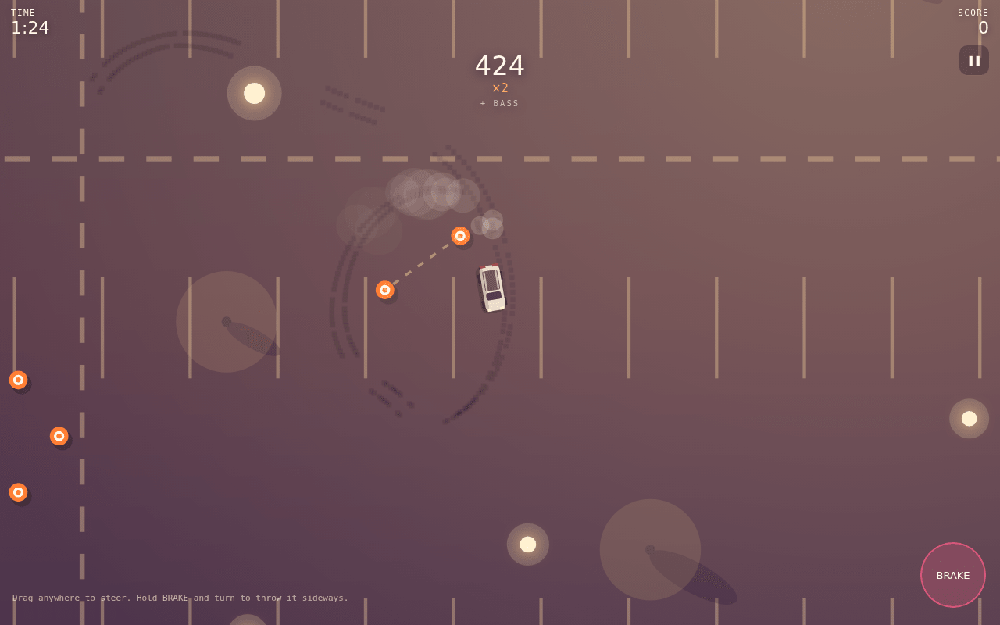

Adaptive music
Layers that arrive and leave with your drift multiplier, all synthesised live.
A drifting game at golden hour where the soundtrack is played by how you drive. Get sideways and an arpeggio comes in; hold it and the bass and lead follow; every orb is a note on the beat.
Wagon key required · sealed and server-checked

Cruising gets you a pad and drums. Drift and an arpeggio joins; at ×2 a bassline comes in; at ×4 an improvised lead takes off. Orbs on the track play as notes quantised to the next sixteenth, so a clean line through them is a melody. Sideways is a cozy game about one boxy wagon and a long, warm evening.
Layers that arrive and leave with your drift multiplier, all synthesised live.
Each with its own key, tempo and palette, unlocking in order with star goals.
For the one car that matters.
A canvas, a small drift-physics model, Web Audio scheduled on a musical clock, and a sealed, server-checked login.
Made for one person, so it's behind a login. The page explains it; the wagon needs its key.
Slide into the light. The song follows.
more in playkeep scrolling · it opens right here